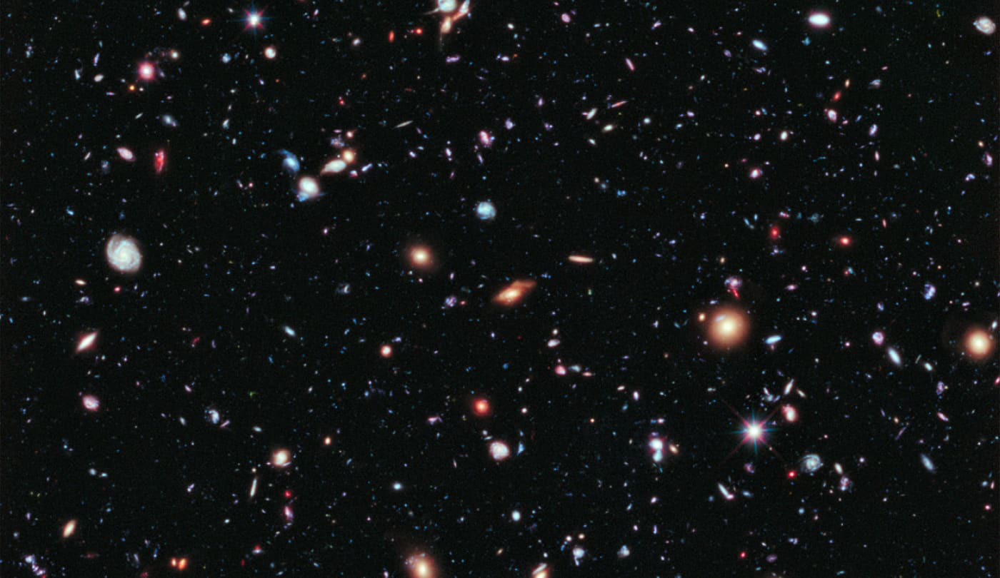
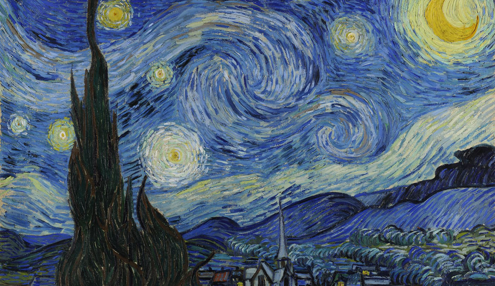

"[O debate sobre o estilo literário de Gênesis 1-11] vai além do rótulo de um gênero de literatura; diz respeito ao processo pelo qual a literatura de qualquer gênero é concebida e composta. Os antigos pensam de maneira diferente; eles percebem o mundo de modos diferentes, com categorias e prioridades distintas das nossas. Em nossa cultura, pensamos 'cientificamente.' Estamos primariamente preocupados com causalidade, composição e sistematização. No mundo antigo, eles são mais propensos a pensar o mundo em termos de símbolos e a expressar sua compreensão por meio de imagens. Estamos primariamente interessados em eventos e realia materiais, enquanto eles estão mais interessados em ideias e sua representação. [Para descrever esse modo de representar a história] o grupo de palavras imagem/imagética/imaginação/imaginativa funcionaria bem (embora imaginário estaria incorreto). Uma retórica usando imagens míticas é facilmente discernível na poesia bíblica (e.g., 'dos céus as estrelas lutaram' ou 'esmagou as cabeças de Leviatã' [Sal. 74:14]), e se torna formalizada no gênero do apocalipse. Não obstante, não está ausente da prosa. Para descrever esse tipo de pensamento, eu gostaria de adaptar o termo 'imagístico.' Em vez de tentar defini-lo, em concordância com o verdadeiro pensamento imagístico, eu o descreverei por ilustrações. Pensamento e representação imagísticos se colocariam em contraste com pensamento científico ou analítico. Podemos ver a diferença se compararmos duas representações visuais do céu noturno — uma tirada pelo telescópio Hubble, a outra apresentada por A Noite Estrelada de Vincent van Gogh. As pessoas jamais considerariam fazer astronomia a partir do van Gogh e não poderiam fazê-lo mesmo se quisessem; a imagem não contém nada da composição ou posição das estrelas. Ao mesmo tempo, não diríamos que é uma falsa representação do céu noturno. Artistas visuais retratam o mundo imagisticamente, e reconhecemos que essa representação é independente da ciência, mas não independente da verdade. Os antigos aplicam essa mesma concepção imagística a todos os gêneros de literatura, incluindo aqueles que não podemos conceber como nada além de científicos. História imagística, como a preservada em Gênesis, é para a história como A Noite Estrelada é para uma fotografia do Hubble.""[The debate about the literary style of Genesis 1-11] goes beyond the labeling of a genre of literature; it concerns the process by which literature of any genre is conceived and composed. The ancients think differently; they perceive the world in different ways, with different categories and priorities than we do. In our culture, we think 'scientifically.' We are primarily concerned with causation, composition, and systematization. In the ancient world, they are more likely to think of the world in terms of symbols and to express their understanding by means of imagery. We are primarily interested in events and material realia whereas they are more interested in ideas and their representation. [To describe this way of representing history] the word group image/imagery/imagination/imaginative would work well (though imaginary would be incorrect). A rhetoric using mythical imagery is easily discernible in biblical poetry (e.g., 'from the heavens the stars fought' or 'crushed the heads of Leviathan' [Ps. 74:14]), and it becomes formalized in the genre of apocalyptic. Nevertheless, it is not absent from prose. To describe this sort of thinking, I would like to adapt the term 'imagistic.' Rather than attempting to define it, in accordance with true imagistic thinking, I will instead describe it by illustrations. Imagistic thinking and representation would stand in contrast to scientific or analytical thinking. We can see the difference if we compare two visual representations of the night sky—one taken by the Hubble telescope, the other presented by Vincent van Gogh's The Starry Night. People would never consider doing astronomy from the van Gogh and could not do so even if they wanted to; the image contains nothing of the composition or position of stars. At the same time, we would not say that it is a false depiction of the night sky. Visual artists depict the world imagistically, and we recognize that this depiction is independent of science, but not independent of truth. The ancients apply this same imagistic conception to all genres of literature, including those that we cannot conceive of as anything other than scientific. Imagistic history, like that preserved in Genesis, is to history as The Starry Night is to a Hubble photograph."
O pensamento imagístico apresenta dificuldades [para pessoas modernas]. Israelitas não tinham problemas em pensar sobre a visão de Ezequiel de Egito como uma árvore cósmica (Ez. 31). Isso não justifica rotular a literatura de mitologia, nem diz respeito a questões de realidade ou verdade. Alguns podem considerar as árvores, o jardim e a serpente como exemplos de pensamento imagístico sem com isso negar realidade e verdade ao relato. O autor entende árvores de um modo que não indica simplesmente uma espécie botânica de flora com notáveis propriedades químicas. Quando colocamos esses elementos em seu contexto do antigo Oriente Próximo e reconhecemos a capacidade de Israel, e mesmo a propensão, de pensar em termos imagísticos, podemos achar que ganhamos uma compreensão mais profunda de importantes realidades teológicas. Alguns estudiosos de hoje acreditam que Israel tinha o hábito de tomar emprestados os mitos de outros povos e transformá-los em uma mitologia própria. Eu não compartilho dessa perspectiva. O que às vezes é percebido como uma mitologia compartilhada é mais frequentemente uma propensão compartilhada de pensar imagisticamente sobre as mesmas questões usando um vocabulário simbólico compartilhado.Imagistic thinking presents difficulties [for modern people]. Israelites found no problems thinking about Ezekiel's vision of Egypt as a cosmic tree (Ezek. 31). This does not warrant labeling the literature mythology, nor does it concern questions of reality or truth. Some might consider the trees, the garden and the snake to be examples of imagistic thinking without thereby denying reality and truth to the account. The author understands trees in a way that does not simply indicate a botanical species of flora with remarkable chemical properties. When we put these elements in their ancient Near Eastern context and recognize the Israelite capacity, and even propensity, to think in imagistic terms, we may find that we gain a deeper understanding of important theological realities. Some scholars today believe that Israel was in the habit of borrowing other people's myths and transforming them into a mythology of their own. I do not share that perspective. What is sometimes perceived as a shared mythology is more often a shared propensity to think imagistically about the same issues using a shared symbolic vocabulary.
Walton, John H. (2015). O Mundo Perdido de Adão e Eva: Gênesis 2-3 e o Debate das Origens Humanas. IVP Academic: Um Selo da InterVarsity Press.Walton, John H. (2015). The Lost World of Adam and Eve: Genesis 2–3 and the Human Origins Debate. IVP Academic: An Imprint of InterVarsity Press.


Resuma o que John Walton quer dizer quando afirma que a narrativa da Bíblia Hebraica é "imagística." A descrição de Walton ajuda você a entender Gênesis melhor?Summarize what John Walton means when he says Hebrew Bible narrative is "imagistic." Does Walton's description help you understand Genesis better?